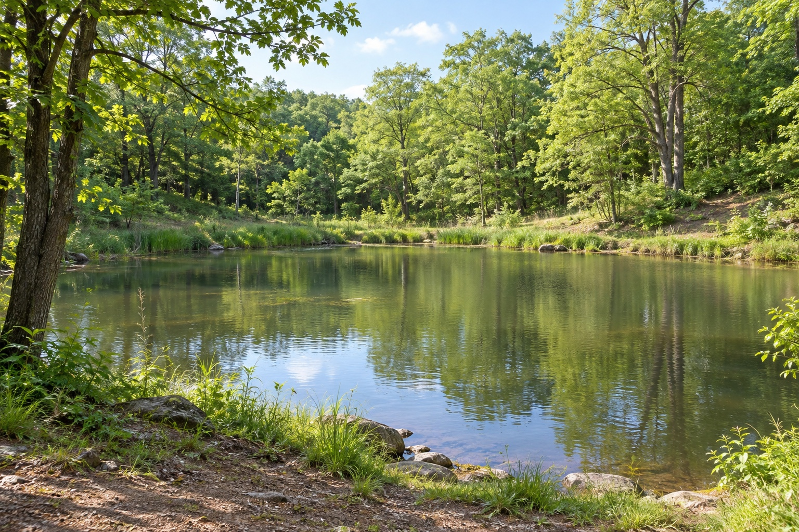

개념 1
연못에는 무엇이 있을까요?

워밍업
사진에서 살아 있는 것을 하나 짚어 보세요.
친구와 이야기해도 좋아요.생물과 환경을 함께 보아요.
연못에는 나무, 풀처럼 살아 있는 것이 있어요.
물, 흙, 햇빛처럼 살아 있지 않은 것도 있어요.
생물 요소
살아 있는 것
나무 · 풀 · 물고기
비생물 요소
살아 있지 않은 것
물 · 흙 · 햇빛
바로 확인 알맞은 말에 동그라미 해요.
나무는 생물 요소 / 비생물 요소예요.
물은 생물 요소 / 비생물 요소예요.
생물과 생물이 살아가는 데 영향을 주는 환경이 모여 생태계를 이루어요.